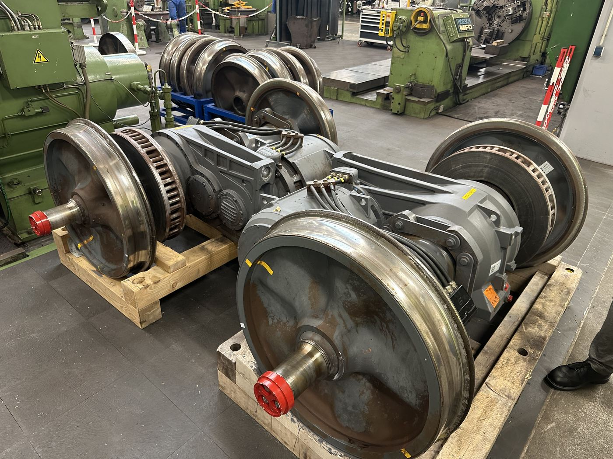
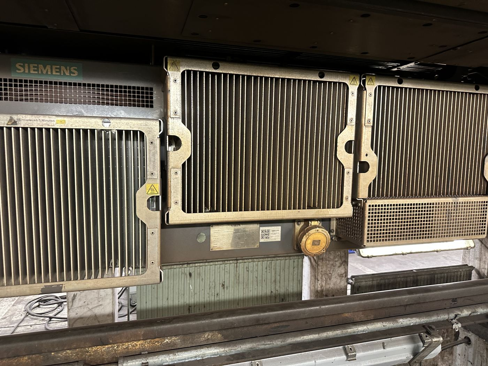
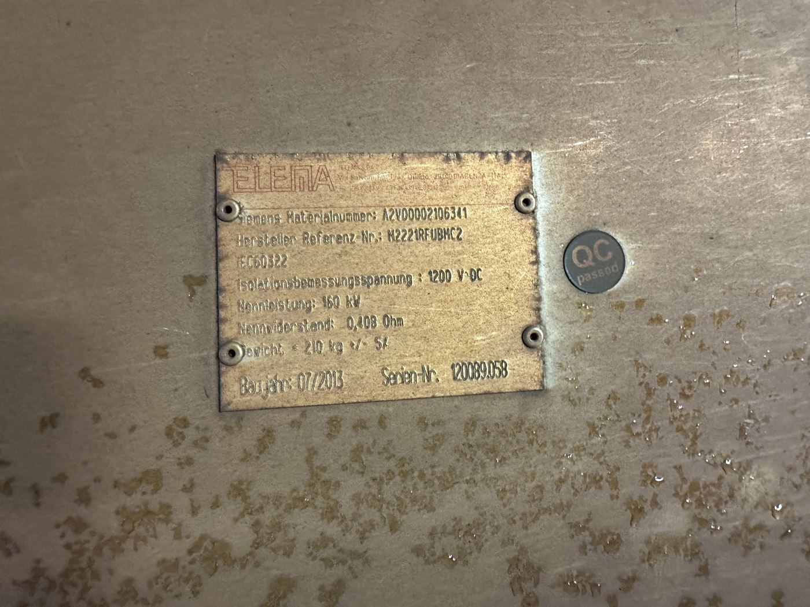

Radsätze mit Antriebsmotor, Getriebe und belüfteter Bremsscheibe.
Bauteil auf der Seite „Drehgestell“
Im Regelfall bremst der Antriebsmotor elektrisch als Generator; steht kein abnehmender Zug zur Verfügung, übernimmt die mechanische Bremse die Verzögerung.
Die elektrische (Nutz-)Bremse nutzt die Asynchronmaschine des Antriebs als Generator: Beim Bremsen wird mechanische in elektrische Energie umgewandelt und als Spannung in den Fahrdraht des gleichen Streckenabschnitts eingespeist – zum Beispiel für einen anfahrenden Zug an der nächsten Haltestelle.
Kann die Energie nicht abgenommen werden, wird sie über einen Bremswiderstand in Wärme umgewandelt, statt ungenutzt zu verpuffen. Ein Typenschild eines solchen Bremswiderstands aus der Flotte nennt eine Nennleistung von 160 kW bei 1200 V DC Isolationsspannung und einen Nennwiderstand von 0,408 Ω.
Reicht die elektrische Bremse nicht aus oder fällt sie aus, greift die mechanische Bremse: Eine Bremszange presst Bremsbeläge auf die belüftete Bremsscheibe. Die Belüftungsrippen der Scheibe vergrößern die Oberfläche und verbessern die Wärmeabfuhr bei starker Beanspruchung.

